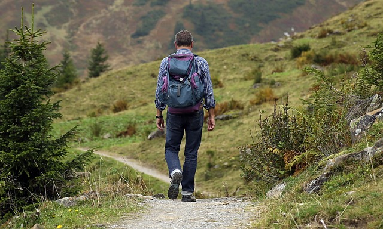

Många vandringsleder och promenadstråk i Tucaryds kommun ligger nära bebyggelse. Andra vandringar leder dig ut på en vandringsled på en vidsträckt mosse eller långt upp på ett utsiktsberg.
Vandringslederna är färgmarkerade i naturen och har information om sevärdheter. Några har audioguider (du scannar en QR-kod med din mobil och får en ljudberättelse) om natur och kultur som du kan lyssna på under din vandring.
Promenaderna är tips på rundor som inte är markerade i naturen.
Längst ned på sidan finns en kartbild där du kan se alla vandringsleder och promenader i kommunen.
Klicka här för att ladda ner kartor för vandringsleder. Cykelleder
Kommunens första cykelutflyktsled, Brantleden, finns rekommenderade sträckor och rundturer som går kors och tvärs mellan Uppgränna i norr och Huskvarna i söder. Här kan du cykla i vackra omgivningar med omväxlande grus- och asfaltsvägar.

Mountainbikebanor finns på flera platser i kommunen och har tagits fram tillsammans med föreningslivet och cykelentusiaster. De är väl uppmärkta i naturen.
Leden är markerad med skyltar i mörkblå bottenfärg och tryck i vitt. Du kan cykla leden i båda riktningarna men vanligast är att börja med den norra sidan av Hemfjärden.